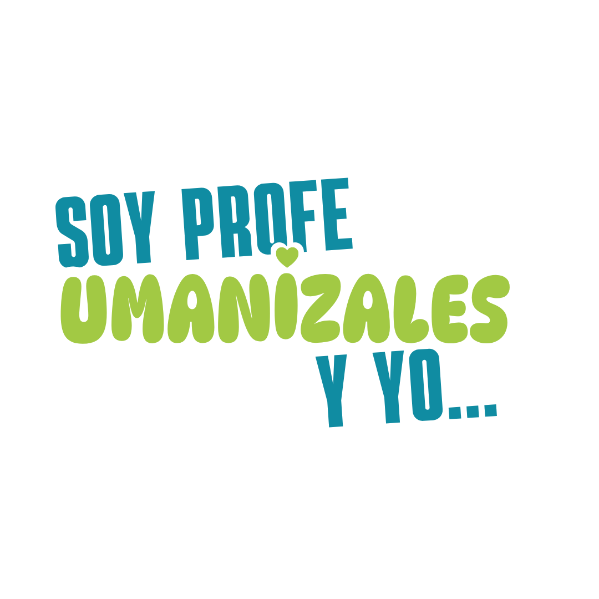

Proyección social
Video: Soy profe Umanizales y yo proyecto
Es el proceso misional que integra acciones, actores y escenarios con el sector externo, articulado con la docencia y la investigación, su propósito es contribuir al desarrollo humano, social, económico, cultural y político del entorno.
Las actividades de proyección social se reconocen en el compromiso principalmente como tiempo complementario, con excepción de algunos roles asociados a las prácticas, que tienen tiempo de contacto directo.
Componentes de la proyección social
La proyección social integra cuatro componentes: la educación continuada; las prácticas estudiantiles; las asesorías y consultorías, y los proyectos de desarrollo social. La Tabla 10 presenta lo que comprende cada uno y cómo se reconoce su tiempo.
| Componente | ¿Qué comprende? | Reconocimiento del tiempo |
|---|---|---|
| Educación continuada | Planes, programas y actividades de actualización disciplinar y profesional como diplomados, cursos, talleres, seminarios y eventos, dirigidos a la comunidad académica, a entidades públicas y privadas y a la comunidad en general. | Contacto indirecto-complementario (HCC) |
| Prácticas estudiantiles | Participación de los estudiantes en escenarios donde contrastan sus aprendizajes con la dinámica de los sectores productivos y sociales. | Según el rol (Tabla 11) |
| Asesorías y consultorías | Procesos de transferencia e integración del conocimiento en propuestas tecnológicas y de gestión de la innovación. | Contacto indirecto-complementario (HCC) |
| Proyectos de desarrollo social | Estrategias para una presencia efectiva en el entorno local, regional, nacional e internacional a partir de las fortalezas disciplinares. | Contacto indirecto-complementario (HCC) |
Las prácticas estudiantiles y sus roles
Las prácticas estudiantiles cuentan con varios roles, en la Tabla 11 se presentan con sus responsabilidades y el reconocimiento de su tiempo.
| Rol | ¿Qué hace? | Reconocimiento del tiempo |
|---|---|---|
| Coordinador de prácticas | Docente con experiencia en la gestión de prácticas, designado por el decano o el director de programa. Gestiona los convenios, la vinculación de estudiantes a los escenarios, el seguimiento y el apoyo a estudiantes, asesores y tutores. | Contacto directo semanal, según los acuerdos internos de cada programa. La parametrización establece como referencia 10 horas semanales. |
| Docente asesor de prácticas | Docente vinculado a la Universidad que acompaña, asesora y evalúa al estudiante durante la práctica y le brinda retroalimentación. | 12 horas semestrales de contacto directo por estudiante en pregrado. Si se requiere más tiempo, se concerta con la Dirección de Proyección Social. |
| Docente tutor | Persona designada por el escenario de práctica para acompañar y supervisar al estudiante en el lugar de desarrollo. | Cada programa define las horas según su necesidad y las concerta con la Dirección de Proyección Social. |
| Coordinador de proyección social de facultad | Enlace entre la facultad y la Dirección de Proyección Social para gestionar y articular proyectos de impacto social. | 6 horas semanales: 3 de contacto directo y 3 complementarias. |
Justificación, acompañamiento y seguimiento
Las horas de proyección social se justifican ante la Dirección de Proyección Social, según el número de estudiantes y las horas de práctica, y se reportan en horas semestrales. Los asesores y tutores mantienen un plan de acompañamiento y un reporte mensual de avance.
El plan de acompañamiento y los reportes de avance de asesores y tutores se socializan con el coordinador de prácticas, quien informa los avances en el comité de proyección social, este seguimiento permite reconocer los aprendizajes que se producen en los territorios y llevarlos de vuelta a la vida académica de los programas.
Por ejemplo, una profesora que asesora la práctica de tres estudiantes de pregrado tiene reconocidas 36 horas semestrales de contacto directo (3 por 12), es decir, 2,25 horas semanales.